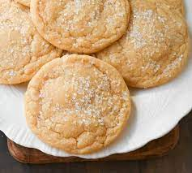

Sugar Cookies

Description
How to bake the perfect sugar cookies for the holidays!
Ingredients
- 2 1/2 cups all-purpose flour
- 2 teaspoons baking powder
- 3/4 teaspoon fine sea salt
- 1 3/4 cups granulated sugar
- 1 large egg plus 1 egg yolk
- 1 teaspoon vanilla extract
Steps
- Preheat the oven to 350°F. Line baking sheets with parchment paper.
- In a medium bowl, whisk together the flour, baking powder, and salt to combine.
- In a large bowl, use an electric mixer fitted with a paddle attachment on medium-high speed to beat the butter and 1¼ cups sugar until light and fluffy, 2 to 3 minutes. Add the egg, egg yolk, and vanilla, and beat until combined. Slowly beat in the flour mixture.
- Place the remaining 1/4 cup sugar in a shallow dish. Using a large (3-tablespoon) spring-loaded scoop, divide the dough into balls, then roll in sugar to coat evenly. Place the dough balls on the prepared baking sheets, spacing 2 inches apart, and flatten slightly with the bottom of a measuring cup.
- Bake for 10 to 12 minutes, or until the cookies set and begin to brown. Cool for 5 minutes before removing to a wire rack to cool completely. C
HOME